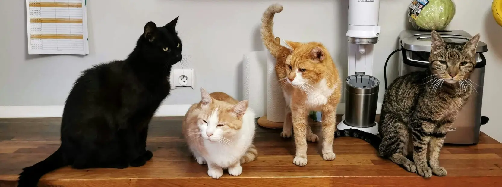

Adopt a Cat!
We make the adoption process as simple as possible for you.
Information about adoption
How does the adoption process look like?
-
1. Visit our centre
Visit our adoption centre and choose a cat.
Visit our adoption centre and choose a cat. You can also visit one of our associated centres throughout Europe. The countries we activate in are Bulgaria, Romania, Ukraine, Hungary, Austria, Germany, France, UK, Poland, or Czech Republic
-
2. Complete the adoption form
Complete the adoption form online or in person.
Complete the adoption form. This will include questions like details about your home regarding cat safety. Please don't forget to bring your ID card!
-
3. Form approval
Please give honest information only.
We care a lot about cats' wellbeing so we will take a close look at the form and then approve it if everything is in order.
-
4. Get to know the cat better
Spend 30 minutes with the chosen cat and see how you get along.
At your request, we can arrange a small visit at our centre in order for you and your family to know the cat better befor adoption. In order to schedule a meeting please check our opening hours.
-
5. Get the cat home
All goes well? You now have a cat. Congrats!
If the whole process goes well and your form is approved, you can take the cat home the same day.